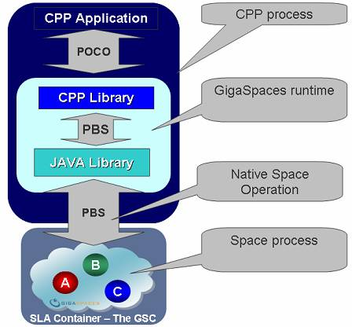
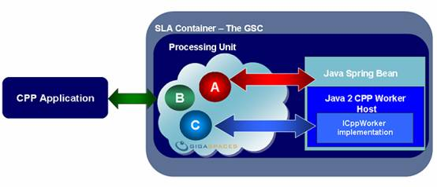

Section Summary: GigaSpaces C++ API explained: About POCOs; space class metadata; using existing C++ classes with the space; dynamic scalability; deployment – standalone and grid-based; configuration; compatibility and packaging.
Overview
The GigaSpaces C++ API has been designed to address the following:
- Being C++ friendly – allowing C++ engineers to use standard tools.
- Ease of use – the ability to build C++-based applications in a matter of minutes.
- Platform Support – to run on 32 and 64-bit platforms.
- Better performance – to have similar or better performance than the Java-based clients.
- Better Interoperability – to cope with space classes that contain nested classes.
- Common development flow, configuration and deployment based on OpenSpaces – one common space runtime for all applications: Java, .NET and C++.
- Using an alternative approach for internal JNI calls – based on lightweight command pattern protocol.
Features
GigaSpaces C++ API offers a very straightforward API that directly accepts the developers C++ objects. No additional serialization or marshalling code needs to be developed and maintained.
The GigaSpaces C++ API provides the following:
- Single space operations and batch space operations.
- Space transactions support.
- Space notifications support.
- Reduced Space lease support (without the ability to renew or cancel).
- Interoperability support – POJO and PONO data-sharing and exchanging of data with C++ IEntry objects via the space.
- Support for portable serialization of non-primitive C++ IEntry attributes – passing Java objects to C++ business logic having objects with nested classes and complex graphs(without loops and duplicated references) as C++ IEntry attributes.
- Space statistics support.
- SQL query support for read, take, and notify operations(SQL blocking take not supported).
- Space administration API support (count, clean, start, stop).
- Space C++ Worker/bean support – allows a C++ developer to embed C++ business logic, so it can run in the same memory address as the SLA container and the space. This allows C++ business logic to have in and out of process scalability capabilities.
- Collection API (stl::vector).
- gs.xml support and gsxml2cpp code generator – generate C++ IEntry, POJO, PONO using one XML file enabling fast Interoperability process.
- Dynamic casting – no need to cast returned objects to relevant types.
- Optimized and efficient JNI calls.
- Out of the box examples.
- Boost Smart pointer interface - Alternative interface for C++ developers that uses only boost smart pointers.
How it Works
C++ business logic can run as a standalone application or can be deployed into the Grid accessing the space in any of the supported runtime topologies: single space, clustered space, remote, or embedded.
When the C++ application interacts with the space, all relevant space components: space filter, replication filter, space data provider (known also as the External Data Source or read/write through), and the mirror service (known also as write-behind) are active and available. In order to access space data originated by CPP business logic and POCOs, these interfaces should be implemented using Java code and relevant POJO classes.
Data written into the space can be monitored and viewed using the standard GUI and CLI tools provided by GigaSpaces. These same tools can be used to monitor and view data stored in the space with Java or .NET applications.
Running C++ classes in a SBA (Space Based Architecture) environment is just as easy as it is in a pure Java environment – the developer provides the Processing Unit configuration with the relevant SLA, and deploys it into the Grid.
Throughout the SBA lifecycle, the C++ worker might either explicitly receive command tasks from other areas of the SBA; or it might go looking for work to perform from within the space.
The POCO API is a micro version of the GigaSpaces JavaSpace API; it supports the read, write, and take paradigm of SBA.
In order to allow interoperability of POCO objects with both POJO and PONO counterparts error-free, the solution is delivered with some tooling that automates code-generation, allowing you to perform the essential transformations into the lightweight GigaSpaces PBS protocol.
Architecture
Standalone C++ Application
When the C++ application is running as a standalone application, the C++ business logic interacts with the space via remote calls. All space operations are conducted using C++ objects, where the actual interaction is performed via native PBS objects. The C++ objects are transformed to PBS objects in runtime, and sent to the space via the C+/+ and Java runtime layers.

C++ Worker
When the C++ business logic runs as a worker, collocated with the space; no remote calls are involved when interacting with the space. Interactions with the space are done using C++ objects, similar to the standalone C++ application configuration.

About POCOs
The POCO is a wordplay on the famous POJO acronym and it stands for Plain Old C++ Object.
It is essentially a C++ class that includes attributes and business logic, where its instances (their data) can be manipulated by the space. With such C++ objects, data can be stored within the space, updated, removed or can trigger notifications. There is no need to re-write your domain classes or to build marshaling/de-marshaling code (which was required in previous versions of GigaSpaces C++ API) so that they can communicate with the space.
In general, you need to simply introduce your C++ class to the space using a standard XML file (that can be created manually or automatically in some cases), and call the relevant API explicitly or cal your business logic implicitly (this will be further explained below).
Space Class Metadata
On top of the C++ class itself, which includes the attribute names and types, additional information is required for the space class. This information can include the indexed fields, FIFO mode, versioned mode, replicable mode, etc.
To introduce this additional metadata to the space, the C++ engineer provides a simple XML-based configuration file (the gs.xml). This file is parsed at pre-compile time and allows a code generator facility to create a piece of code that "glues" between the C++ runtime and the space runtime (the marshaling code).
 For more details, refer to the CPP API Code Generator section.
For more details, refer to the CPP API Code Generator section.
Here is a simple example of the gs.xml content:
<?xml version="1.0" encoding="UTF-8"?> <gigaspaces-mapping> <class name="Message" persist="false" replicate="false" fifo="false" > <property name="id" type="int" null-value="-999" index="true"/> <routing name="id"/> <property name="uid" type="string" null-value="" index="false"/> <id name="uid" auto-generate="true" /> <property name="content" type="string" null-value="" index="false"/> </class> </gigaspaces-mapping>
The same metadata decoration file is used across all languages – the same gs.xml file can be used to introduce your language's independent class to the space.
Here is the C++ h file that is generated or should be used with the above gs.xml file:
class Message: public IEntry { public: Message() { content = ""; id = -999; uid = ""; } std::string content; int id; std::string uid; virtual const char* GetSpaceClassName() const { return "Message"; } }; typedef boost::shared_ptr<Message> Message_ptr;
Here is the C++ code using the above class:
SpaceProxyPtr space ( finder.find("jini://*/*/mySpace") ); Message_ptr msg( new Message() ); msg->id = 1; msg->content = "Hello World"; space->write(msg, NULL_TX, 5000000); Message messageTemplate; Message_ptr result (space->take(&messageTemplate, NULL_TX, 0 )); The SpaceProxyPtr includes all the familiar Space operations such as write , read , take , update for single and batch operations , SQL Query , Event Notifications, Transactions etc.
As you can see, the example above uses boost::shared_ptr. If you are not familiar with boost, see: http://www.boost.org/.
Using Existing C++ Classes with the Space
To use existing C++ classes with the space, you need to perform minor changes to your existing C++ classes (such as inheriting from the IEntry base class). This allows you to implement your own serialization and data transport protocol to gain total control of the byte stream content sent through the wire when the client interacts with the space process.
For more details, see the Writing Existing C++ Class to Space section.
Interoperability – Sharing Data across Java, .NET and C++ Applications
The most complex part of interoperability is the ability for every class structure to digest each development language, and to include one common denominator that is understood by the space runtime.
There are several ways to achieve this, for example, using XML to store data and convert it to native language objects. However, we have found this option irrelevant for real-time SBA applications our users are building. They need fast data conversion and transportation services that are able to handle objects from all supported languages on all platforms in an optimized and efficient manner – meaning, micro-second latency. GigaSpaces has achieved this goal and has named it Portable Binary Serialization (PBS).
The PBS mechanism efficiently scans, reduces, and serializes complex objects from different languages; and translates them into a format known by all supported runtimes: .NET, C++, and Java.
With the PBS approach, a POCO class (that is a graph object) holds references to other objects or arrays of objects. This object can be stored in the space in a way that a Java application using a matching POJO can read the data and materialize it into a pure Java object. The same is true with .NET.
Dynamic Scalability
The main problem with Grid-based applications and such heterogeneous, complex environments is the inability to forecast how many machines need to store the data or run the business logic. Without a smart container for the data and business logic that can handle the application objects (and not only network processes), it's almost impossible to scale your application efficiently. You need a nervous system with sensors that instruct data and business logic instances to started, shut down, or move to another machine to scale dynamically. In a sense, you have 2 dimensions to scale: in-proc and out-of-proc. In-proc means multiple threads of your business logic running within the same process. Out-of-proc means starting new instances of your business logic across multiple Grid nodes (on the same machine or different machines). In both cases, you need the ability to increase/decrease the amount of business logic instances in runtime, based on some SLA of dynamic external business logic.
The space has already introduced Java based-business logic – scaling your application by adding more containers on the fly to increase space cluster capacity. Java-based in/out-of-proc scalability is supported via Jini service beans and expanded also to Spring beans. This is one of the main capabilities of the OpenSpaces framework. The new C++ framework allows you to do the same with C++ business logic.
Deployment – Standalone and Grid-Based
Deploying a C++ SBA application involves the standard C++ runtime libraries, the gs.xml files, and the GigaSpaces runtime libraries (C++, Java, and JDK libraries).
These can be packaged using an installer that simplifies the deployment routine. You can place the runtime libraries in a shared folder, so you won't need to distribute the files to every machine running an application that accesses the space. Another option is to can encapsulate the business logic as a Processing Unit to be managed, deployed and executed across the Grid nodes by the SLA-driven container. This allows you to control the different C++ business logic instances to access remote spaces or collocated spaces (C++ business logic running in the same memory address as the space, allowing you to avoid remote calls).
Configuration
Beyond the gs.xml file creation and the serializer library compilation (compile the generated code as a custom build event as part of your Visual Studio project), there is very little to do in order to run your C++ application and start working with the space.
You can run the C++ application in remote mode – access a clustered space running across the Grid, or start the space instance within your C++ process.
Compatibility
GigaSpaces C++ API is compatible with other important GigaSpaces components and tools:
- The GigaSpaces Management Center, which is being significantly improved to support large clusters, displays your C++ classes metadata, and allows you to query C++ objects.
- Write/read-through and write-behind (Mirror Service) are supported. POCO objects can be delegated into your database using your existing database schema.
- Relevant Java-based interceptors such as replication and space filters can be used for events generated by C++ API activities.
Packaging
The GigaSpaces C++ package includes the following components:
- Examples – this is in fact most of the package. It includes a simple hello world example, C++ benchmark, and a full C++ SBA example. For more details, see the C++ homepage.
- Documentation – Doxygen (http://www.stack.nl/~dimitri/doxygen) and CHM-based API reference documentaion.
- Open-source and GigaSpaces API h files.
- Runtime libraries – core C++ API, memory allocator library, and a dynamic loader library used when deploying your C++ application into the Grid.
- Compile scripts and source code – the GigaSpaces C++ package is provided out-of-the-box for Windows and Linux 32 and 64-bit platforms. If you are using other platforms, such as MaxOS, HP, AIX, etc., it is possible to build the C++ libraries on your own. Full source code and compile scripts can be provided.
- Regression tests framework – open-source code of GigaSpaces C++ framework tests, based on CUnit , allows you to run regression tests to make sure the libraries provided work as expected.
Libraries
GigaSpaces C++ API uses ACE and Boost platform independent libraries.
These provide out of the box smart pointers, threading, singletons, collections, and many more capabilities provided for all platforms.
Internal Library Architecture
The GigaSpaces C++ libraries are constructed in several layers:
- Space API access layer – the C++ proxy implementation.
- C++ object materialization layer – this involves generation of PBS objects and the ingoing and outgoing activity with the space runtime.
- Runtime layer – the client's C++ proxy handles client-side activities, such as transaction handlers, space proxy handlers, etc.